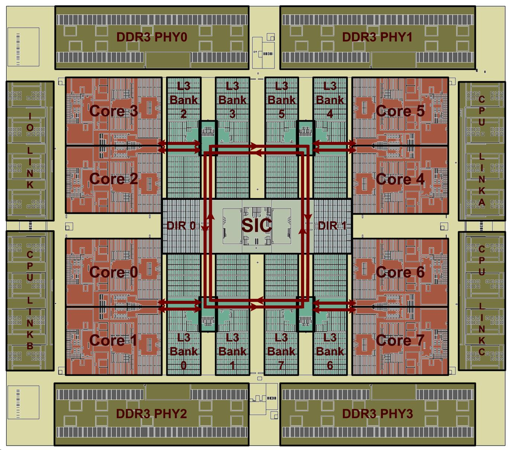
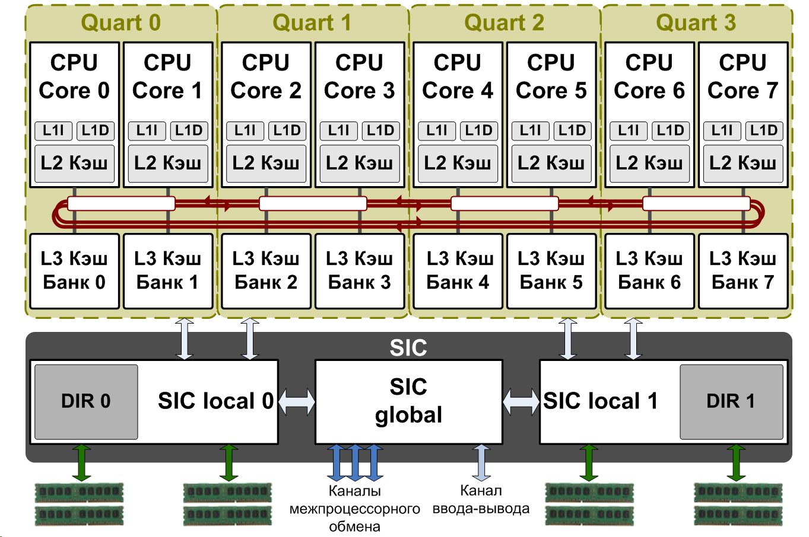
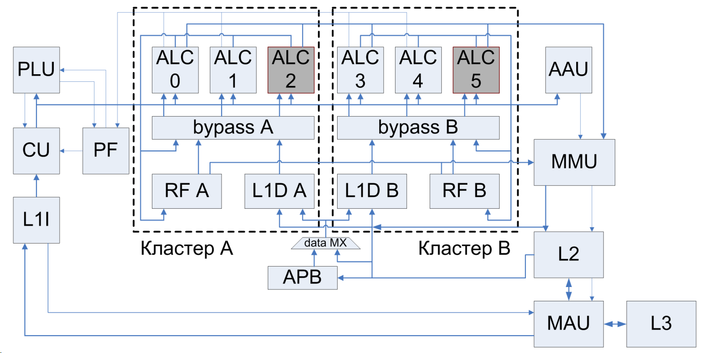
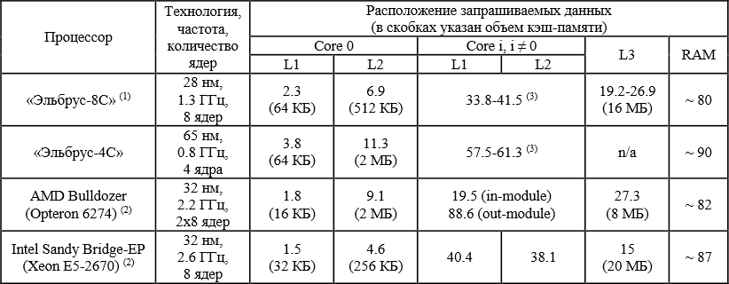
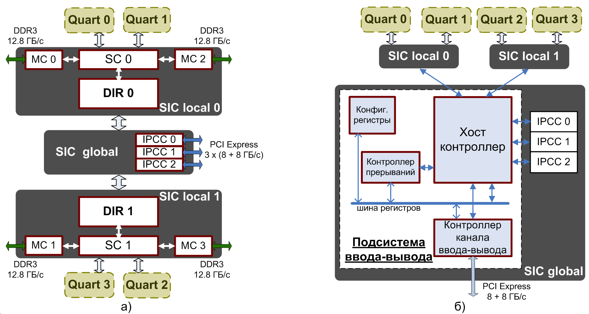
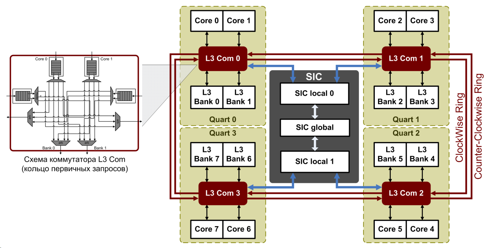

Доклад: Разработка первого отечественного восьмиядерного микропроцессора Эльбрус по технологии 28 нм
(Design of the first Russian 28 nm 8-core processor)
Д.М. Альфонсо, инженер
А.С. Кожин, старший инженер
Е.С. Кожин, инженер
В.О. Костенко, начальник сектора
Н.Ю. Поляков, старший инженер
Е.В. Смирнова, инженер
П.А. Смольянов, инженер
Аннотация: Доклад посвящен разработке микропроцессора "Эльбрус-8C" - первого российского восьмиядерного микропроцессора, изготовленного по технологии 28 нм. В докладе рассматриваются методы, позволившие получить высокий уровень быстродействия микропроцессора и вычислительных комплексов на его основе с учетом технологических ограничений на занимаемую площадь и рассеиваемую мощность.
1. Введение
Компания АО «МЦСТ» на протяжении уже более 20 лет занимается проектированием высокопроизводительных микропроцессоров архитектуры «Эльбрус» собственной разработки и вычислительных комплексов на их основе. За это время государственные испытания прошли четыре поколения микропроцессоров, в каждом из которых для наращивания вычислительной мощности вносились значительные микроархитектурные изменения, такие как повышение тактовой частоты, поддержка новых высокоскоростных интерфейсов и переход к многоядерности. В 2011 году по технологии 90 нм было начато производство первого многоядерного микропроцессора архитектуры «Эльбрус», в состав которого вошли два универсальных ядра и 4 ядра DSP - микропроцессора «Эльбрус-2С+» с тактовой частотой 500 МГц и производительностью 28 Gflops на операциях с одинарной точностью (FP32). Следующим и на сегодняшний день старшим процессором линейки «Эльбрус», прошедшим государственные испытания весной 2014 года, стал четырехъядерный микропроцессор «Эльбрус-4С» с рабочей частотой 800 МГц и производительностью более 50 Gflops (FP32), спроектированный по технологии 65 нм.
Создание микропроцессора пятого поколения было начато компанией АО «МЦСТ» в конце 2011 года с участием специалистов ПАО «ИНЭУМ им. И.С. Брука». Целью работы стало достижение быстродействия не менее 150 Gflops на операциях с одинарной точностью, что в 3 раза превышает вычислительную мощность микропроцессора предыдущего поколения. Данный доклад посвящен решению проблемы, суть которой заключается во влиянии на производительность микропроцессора множества его компонентов и составных блоков, некоторые из которых могут стать «узким» местом системы и существенно ограничить быстродействие, поэтому при проектировании необходимо было решить целый ряд основных задач:
В совокупности с технологическими ограничениями на занимаемую площадь и рассеиваемую мощность поставленные задачи потребовали комплексного и глубокого изменения дизайна микропроцессора «Эльбрус-4С», взятого за основу. В докладе приводятся характеристики и особенности разработанного микропроцессора пятого поколения «Эльбрус-8C» (на начальных этапах проекта использовалось рабочее название «Эльбрус-4С+»), а также рассматриваются основные решения, примененные при его создании.
2. Характеристики и структурная схема
Микропроцессор «Эльбрус-8C» спроектирован и изготовлен по технологическим нормам 28 нм. Его кристалл имеет площадь 321 кв. мм и содержит 2.73 млрд. транзисторов. На рис. 1 и рис. 2 приведены топологический план и структурная схема микропроцессора.

Рис. 1. Топологический план микропроцессора «Эльбрус-8C»
(Core 0-7 - процессорные ядра, L3 Bank 0-7 - банки кэш-памяти третьего уровня, SIC - контроллер системных обменов, DIR 0,1 - глобальный справочник, DDR3 PHY 0-3 - физуровни памяти, CPU Link A,B,C - физуровни каналов межпроцессорного обмена, IO Link - физуровень канала ввода-вывода)
На одном кристалле размещены восемь процессорных ядер архитектуры «Эльбрус» (Core 0-7), каждое из которых способно исполнять до 25 операций за такт в скалярном режиме (32-х и 64-х разрядные данные) и до 41 операции за такт в векторном режиме (упакованные 32-х разрядные данные). В состав каждого ядра входят собственные кэш-памяти первого (L1 кэш данных (L1D), 64 КБ, кэш команд (L1I), 128 КБ) и второго (L2 кэш объемом 512 КБ) уровней. Ядра подключены к общей кэш-памяти третьего уровня (L3 кэш, 16 МБ), которая имеет распределенную структуру с разбиением на восемь независимых банков (L3 Bank 0-7), причем каждое ядро имеет доступ ко всем банкам. Ядра и банки общей кэш-памяти объединены в узлы Quart («кварты») по два ядра и два банка в каждом. Кварты соединены двунаправленным буферизующим кольцом.
Контроллер системных обменов SIC (System Interface Controller) выполняет функции подсистемы памяти (SIC local 0,1) и подсистемы ввода-вывода (SIC global) и включает в свой состав все контроллеры высокоскоростных интерфейсов процессора:

Рис. 2. Структурная схема микропроцессора «Эльбрус-8C»
Расчетная тактовая частота разработанного микропроцессора достигает 1.3 ГГц, при этом пиковая производительность составляет 250 Gflops на операциях с одинарной точностью (FP32) и 125 Gflops на операциях с двойной точностью (FP64). Первые инженерные образцы были получены в ноябре 2014 года, микропроцессор должен пройти государственные испытания в конце 2015 года.
3. Процессорное ядро
При разработке ядра «Эльбрус-8C» за основу было взято ядро микропроцессора предыдущего поколения «Эльбрус-4C». Для повышения производительности ядра было решено увеличить тактовую частоту и число одновременно исполняемых арифметических операций с плавающей точкой. Благодаря переходу на новый технологический процесс 28 нм частота 1.3 ГГц была получена без значительных трудностей путем изменения конфигурации блочной памяти кэш-памяти ядра и исправления отдельных критических путей. Наибольший интерес представляет расширение арифметики с плавающей точкой, описанное ниже.

Рис. 3. Структурная схема процессорного ядра «Эльбрус-8C» и иерархии кэш-памяти
На рис. 3 приведена структурная схема процессорного ядра «Эльбрус-8C» и его отличие от ядра предыдущего поколения. Ядро микропроцессора «Эльбрус-4C» имеет двухкластерную организацию. Каждый кластер содержит три арифметико-логических канала (ALC), локальный блок регистрового файла (RF), локальный блок кэша данных первого уровня (L1D) и блок подготовки операндов и сбора результатов (bypass). ALC имеют отдельные устройства для выполнения целочисленных операций и операций с плавающей точкой. Целочисленные операции выполняются во всех шести каналах двух кластеров. Скалярные обращения в память по считыванию выполняют ALC 0, 2, 3 и 5, по записи - ALC 2 и 5. Операции с плавающей точкой типа сложения и умножения, в том числе трехоперандные, выполняют ALC 0, 1, 3 и 4, операцию деления - только ALC 5.
Увеличение числа одновременно исполняемых арифметических операций с плавающей точкой было достигнуто за счет добавления в ALC 2 и 5 возможности исполнения операций сложения и умножения с плавающей точкой. При этом потребовалось решить следующие подзадачи:
Каждое устройство ALC может принимать одну 64-разрядную операцию с плавающей точкой за такт, в том числе трехоперандную. Трехоперандная операция представляет собой две последовательные операции. Таким образом, получается 8 операций с плавающей точкой за такт для ядра «Эльбрус-4C» и 12 для ядра «Эльбрус-8C». С учетом расчетной частоты 1,3 ГГц получаем производительность 15,6 Gflops на операциях с двойной точностью (FP64) для каждого ядра. Если в качестве операндов подавать векторы из двух компонент одинарной точности, получаем 31,2 Gflops на ядро (FP32).
В результате применения обоих методов удалось повысить производительность ядра почти в 2,5 раза, при этом увеличение его площади составило всего 3,2%.
4. Иерархия кэш-памяти
Кэш-память существенно влияет на производительность микропроцессора, позволяя в максимально возможной степени сократить задержку доступа к инструкциям и данным программы. Поэтому ее структура и характеристики улучшались в каждом поколении микропроцессоров архитектуры «Эльбрус». Наращивание количества процессорных ядер только усилило роль кэш-памяти, возложив на нее дополнительную функцию обеспечения межъядерного взаимодействия. При проектировании восьмиядерного микропроцессора «Эльбрус-8C» одной из первостепенных задач стала именно разработка новой иерархии кэш-памяти, удовлетворяющей следующим требованиям:
Кэш-память ядра была унаследована от процессора «Эльбрус-4C» с некоторыми изменениями (рис. 3). Как и в предыдущем поколении, используется раздельная кэш-память первого уровня для команд (L1I кэш, 128 КБ) и для данных (L1D кэш, 64 КБ). Кэш команд состоит из кэш-строк размером 256 байт и имеет ассоциативность 4. Размер кэш-строки виртуально индексируемого кэша данных - 32 байта, ассоциативность 4. Кэш-память второго уровня (L2 кэш) хранит и код, и данные, ее структура была модифицирована для работы на большей частоте. Также ввиду технологических ограничений на площадь кристалла и новых особенностей иерархии размер L2 кэша был уменьшен до 512 КБ, в остальном он не изменился по сравнению с процессором предыдущего поколения. Размер кэш-строки L2 кэша - 64 байта, ассоциативность 4, он является неинклюзивным относительно кэш-памяти первого уровня.
Устройство MAU (Memory Access Unit), подключаемое к выходу L2 кэша и управляющее обменами ядра с остальной системой, было разработано заново с целью повышения рабочей частоты и масштабируемости, а также оптимизации взаимодействия ядра с кэш-памятью третьего уровня.
Главной особенностью иерархии кэш-памяти нового микропроцессора стало появление общей кэш-памяти третьего уровня (L3 кэш) объемом 16 МБ. Она имеет распределенную структуру и адресное разбиение (по 8, 7, 6 битам адреса) на восемь независимых банков по 2 МБ, причем любое ядро имеет доступ ко всему объему каждого банка. Размер кэш-строки данных - 64 байта. Ассоциативность каждого банка 16, то есть по одному индексу банка L3 кэша может быть одновременно размещено не более 16-ти разных кэш-строк. При такой высокой ассоциативности одновременное чтение тэгов и данных всех строк одного индекса неэффективно и приводит к выделению значительной динамической мощности, поэтому была разработана схема с раздельными конвейерами тэгов и данных, в которой большее время доступа к данным компенсировалось формированием упреждающего заголовка ответа и байпассированием самих данных в ядре. Выбор строки-жертвы для вытеснения производится по алгоритму NRU (Not Recently Used). Память тэгов реализована на статической двухпортовой памяти с произвольным доступом SRAM, имеющей независимые порты чтения и записи. Память данных каждого банка L3 кэша разделена на два однопортовых массива шириной 32 байта, соответствующих старшей и младшей половине кэш-строки. Каждый такт можно выполнять чтение или запись только одного массива данных, или одновременное чтение одного массива и запись другого. Таким образом, максимальная пропускная способность кэш-памяти третьего уровня составляет 333 ГБ/с как по чтению, так и по записи.
В рамках задачи проектирования иерархии кэш-памяти для многоядерного микропроцессора наибольший интерес представляет проблема поддержки межъядерной когерентности и ускорения работы с общими данными. Для ее решения на базе общей кэш-памяти третьего уровня реализован локальный справочник с MOSI-протоколом когерентности, существенно снижающий трафик когерентных сообщений. Принцип работы справочника основан на свойстве инклюзивности L3 кэша относительно L1 и L2 кэшей каждого ядра своего процессора. Строки, находящиеся в L1 и L2 кэшах всех ядер, обязательно присутствуют в кэш-памяти третьего уровня, возможно без актуальных данных; вытеснение строки из L3 кэша вызывает вытеснение этой строки из всех кэшей верхних уровней (Back-Invalidate). Каждая кэш-строка L3 кэша дополнена информацией о ее состоянии в кэш-памяти всех процессорных ядер - вектором возможных ядер-совладельцев и указателем на владельца модифицированной строки. Эта информация вместе с памятью тэгов и состояний L3 кэша является локальным справочником. Рассылка снуп-запросов выполняется только ядрам, указанным в справочнике, а не широковещательно. Стоит отметить, что кэш-память третьего уровня также играет роль локальной точки сериализации запросов от процессорных ядер с пропускной способностью 8 запросов/такт. При этом адресные блокировки происходят только для запросов по записи, последовательные запросы по чтению от разных ядер для ускорения работы с общими данными могут выполняться одновременно. Доступ к контроллеру системных обменов SIC происходит только при отсутствии данных в L3 кэше и предыдущих невыполненных кэшируемых обращений к той же кэш- строке. Такая схема позволяет значительно уменьшить нагрузку на подсистему памяти, имеющую меньшую пропускную способность.
Динамическое распределение общей кэш-памяти между процессорными ядрами в зависимости от их потребностей позволяет эффективно использовать ее объем на большинстве классов задач. Также для некоторых классов задач предусмотрен режим фиксированного распределения по 2 МБ на ядро.
Таблица 1. Время доступа в память (в наносекундах)

(1) Расчётные значения для частоты 1.3 ГГц.
(2) Данные взяты из статьи [6].
(3) В кэш-памяти L1 процессоров семейства «Эльбрус» хранятся только немодифицированные строки, которые не могут быть считаны по снуп-запросу.
В таблице 1 приведено минимальное время доступа в память в зависимости от расположения запрашиваемых данных для разработанного микропроцессора «Эльбрус-8C» и его сравнение с микропроцессором предыдущего поколения «Эльбрус-4C» и зарубежными аналогами AMD Bulldozer (Opteron 6274) и Intel Sandy Bridge-EP (Xeon E5-2670), изготовленными на технологическом процессе того же уровня.
Кэш-память с такими высокими характеристиками впервые применяется в отечественных микропроцессорах. Предложенные решения обеспечивают хорошую масштабируемость кэш-памяти на большее количество ядер и позволяют использовать ее в будущих проектах.
5. Подсистема памяти
Подсистема памяти обеспечивает когерентный доступ процессорных ядер и внешних устройств к оперативной памяти. Как и кэш-память, она играет важную роль в достижении требуемой производительности, особенно для Memory-Bound программ. По сравнению с микропроцессором предыдущего поколения в
«Эльбрус-8C» удвоилось число процессорных ядер и, соответственно, возросла нагрузка на память. Чтобы подсистема памяти не стала «узким» местом микропроцессора, была поставлена задача повысить ее пропускную способность.
Микропроцессор «Эльбрус-8С» поддерживает работу с оперативной памятью DDR3-1600 SDRAM. Количество каналов памяти было увеличено до четырех, что обеспечивает максимальную пропускную способность 51.2 ГБ/с и установку до 64 ГБ памяти на процессор. В состав микропроцессора входят три спроектированных на базе физуровня PCI Express контроллера дуплексных каналов межпроцессорного обмена с пропускной способностью 8 ГБ/с в каждую сторону. Посредством этих каналов возможно объединение до четырех процессоров в NUMA систему с общей когерентной памятью.

Рис. 4. Структурная схема контроллера системных обменов SIC (System Interface Controller): а) подсистема памяти; б) подсистема ввода-вывода
Функции подсистемы памяти выполняет контроллер системных обменов SIC (System Interface Controller), кроме того он является глобальной точкой сериализации запросов в многопроцессорной системе с общей памятью. В микропроцессоре «Эльбрус-4С» точка сериализации была способна обрабатывать не более одного запроса за процессорный такт. В новом микропроцессоре ее пропускная способность увеличена вдвое за счет адресного разделения на два независимых кластера SIC local 0,1 (рис. 4а). Каждый кластер включает в себя два контроллера оперативной памяти MC, системный коммутатор SC, реализующий сериализацию с темпом один запрос за такт, глобальный справочник DIR и различные коммутаторы (не показаны на рисунке). Банки кэш-памяти третьего уровня имеют фиксированную привязку к кластерам: каждая пара контроллеров памяти обслуживает ближайшие четыре банка L3 кэша. Контроллеры каналов межпроцессорного обмена (IPCC 0,1,2) размещены в блоке SIC global и через коммутатор пакетов подключены к обоим кластерам SIC local.
В многопроцессорной системе с общей памятью большое значение имеет протокол когерентности. Как и в процессоре предыдущего поколения, в микропроцессоре «Эльбрус-8С» используется глобальный справочник для уменьшения когерентного трафика и времени обработки запросов в память, но, что принципиально, не полный по памяти, а частичный. Полные справочники обычно располагаются в выделенных областях оперативной памяти и содержат информацию о когерентном состоянии каждой строки памяти, тогда как частичные справочники хранят лишь часть информации в специально отведённой для этих целей кэш-памяти. Основными доводами против варианта полного справочника послужили достаточно сильно возрастающая в этом случае сложность адресной арифметики, снижение производительности и избыточность, так как размер полного справочника пропорционален объему всей оперативной памяти, а необходимо покрыть только суммарный объем кэш-памяти четырех процессоров. С помощью частичного справочника особенно эффективно оптимизируются запросы процессора в свою память в том случае, когда запрашиваемые данные не присутствуют в других процессорах. При том что такой тип запросов является доминирующим в вычислительных системах, их обработка происходит достаточно быстро, без затраты каких-либо системных ресурсов. Единственным аргументом против частичного справочника является необходимость при вытеснении строки из справочника вытеснять ее и из кэш-памяти всех процессоров. Однако при достаточном покрытии справочника данный недостаток проявляется крайне редко.
Для увеличения эффективности покрытия глобального справочника было решено:
Глобальный справочник выполнен на статической двухпортовой памяти с произвольным доступом SRAM, имеющей раздельные порты чтения и записи. В процессоре «Эльбрус-8С» находятся два экземпляра справочника: по одному на каждый SIC local. Объём каждого из них составляет 512 Кбайт (2^17 блоков), организованных в виде кэш-памяти с ассоциативностью 16. Суммарный объём справочника в каждом процессоре составляет 1 Мбайт, он покрывает 32 Мбайт памяти, то есть может полностью покрыть L3 кэши двух процессоров. Для совместимости с когерентным протоколом L3 кэша в глобальном справочнике реализован MOSI-протокол.
Предложенная архитектура частичного справочника является масштабируемой и адаптируется как к изменяющемуся объёму доступной кэш-памяти, так и к меняющимся параметрам системы в целом, что позволяет использовать его в будущих проектах.
6. Подсистема ввода-вывода
Подсистема ввода-вывода микропроцессора «Эльбрус-8C» обеспечивает доступ ядер к внешним устройствам и конфигурационным регистрам системы, а также доступ внешних устройств к оперативной памяти системы посредством DMA. Для связи процессора с КПИ-2 (Контроллер Периферийных Интерфейсов второй версии) используется физический уровень PCI Express, пропускная способность которого выросла в 4 раза по сравнению с микропроцессором предыдущего поколения «Эльбрус-4C». В состав подсистемы, структурная схема которой представлена на рис. 4б, входят контроллер канала ввода-вывода, блок конфигурационных регистров подсистемы памяти, контроллер прерываний и Хост-контроллер, обеспечивающий доступ ядер к конфигурационным регистрам и внешним устройствам, пересылку прерываний от внешних устройств и других процессоров в контроллер прерываний и доступ внешних устройств в оперативную память.
При разработке подсистемы ввода-вывода ставились следующие задачи:
1) разработать новый контроллер канала ввода-вывода для приема и передачи пакетов от контроллера физуровня PCI Express;
2) разработать новый Хост-контроллер, обеспечивающий:
а) взаимодействие с новыми контроллерами системных обменов, б) взаимодействие с новым контроллером канала ввода-вывода,
в) упорядоченное согласно стандарту PCI 2.0 исполнение DMA-обращений от внешних устройств в оперативную память без потери скорости обмена.
Наиболее сложной является задача обеспечения упорядоченности DMA-обращений. Особенностью некоторых периферийных интерфейсов (например, PCI Express) является то, что операции DMA-записи данных в память процессора имеют почтовый тип (posted), то есть считаются завершенными сразу после выдачи из устройства, а DMA-обмен, состоящий из почтовых операций - после выдачи последней операции записи в обмене. По окончании обмена устройство либо меняет значение своего статусного регистра, либо значение некоторой ячейки (дескриптора обмена) в памяти процессора (посредством DMA-записи).
Перед использованием данных, записанных в память, необходимо проверить, завершился ли обмен, считывая либо статусный регистр устройства, либо дескриптор обмена. Отсутствие контроля завершения операций DMA-записи в NUMA-системе может привести к считыванию из памяти некорректных данных и, как следствие, к некорректной работе программы. В зависимости от способа индикации завершенности обмена (статусный регистр или дескриптор) можно выделить 2 сценария возникновения ошибки. В первом случае DMA-обмен завершается в памяти позднее, чем процессор прочтет статусный регистр и начнет читать записанный в память массив, то есть, происходит переупорядочивание операций DMA-записи элемента массива и процессорного чтения регистра устройства. Во втором случае меняется порядок выполнения операции DMA-записи элемента массива и DMA- записи дескриптора.
В соответствии с описанными случаями возникают две задачи:
В NUMA-системах гарантировать упорядоченность двух DMA-записей в памяти разных процессоров можно только при условии наличия средств контроля завершения этих операций. Таким образом, в некоторой точке системы (назовем её точка упорядоченности) DMA-запросы на запись должны становиться непочтовыми (non- posted). Через точку упорядоченности должны проходить также все ответы на процессорные чтения. Такой точкой может быть либо Южный мост, либо Хост-контроллер процессора, к которому подключено периферийное устройство.
Надежным решением является атомарное выполнение DMA-записей, однако, оно неприменимо в системах, требующих высоких скоростей обмена, т.к. отсутствует конвейерность выполнения операций. Для решения задач упорядочивания в микропроцессоре «Эльбрус-8C» используется принцип консистентности памяти, реализуемый в соответствии с политикой Write-Back кэш-памяти. Сначала из точки упорядоченности отправляется запрос на владение целевой строкой, который ведет к ее вычеркиванию из кэш-памяти всех ядер. Далее в точке упорядоченности данные записи, пришедшие из периферийного устройства, накладываются по маске на подложку (ответ на запрос владения), и модифицированная строка отправляется в память. Получается своего рода кэш- память (далее - DMA-кэш), которая участвует в механизме поддержания когерентности подсистемы памяти. DMA- запись будет завершена в момент модификации подложки, т.к. в ответ на процессорные чтения по данному адресу DMA-кэш вернет модифицированные данные.
Для достижения упорядоченности DMA-операций наложение данных на подложку должно выполняться в порядке прихода DMA-запросов. Ответы на процессорные чтения также должны выдаваться из точки упорядоченности после модификации данных всех предыдущих DMA-запросов.
Существенным преимуществом данного метода является возможность конвейерного исполнения запросов:
Недостатком метода является увеличение количества кэшей в системе. Если для поддержания когерентности памяти используется механизм полного снупирования, данный метод приведет к значительному увеличению служебного трафика. Решением данной проблемы является использование полного справочника для строк, находящихся в DMA-кэше. В микропроцессоре «Эльбрус-8С» размер DMA-кэша составляет 32 строки данных, т.е. размер DMA-справочника по всем процессорам системы составляет 128 строк, что в 2048 раз меньше глобального справочника.
7. Коммутация соединений
С усовершенствованием технологических норм межблочные соединения оказывают все большее влияние на характеристики микропроцессора. Большая площадь кристалла и, соответственно, длина соединений, увеличение числа абонентов, требования к пропускной способности и времени доступа в память, ограничения на рассеиваемую мощность - все это делает задачу коммутации соединений между процессорными ядрами, общим кэшем и подсистемой памяти одной из первостепенных при проектировании микропроцессора.
На практике используется два подхода к проблеме: централизованная коммутация и распределенная коммутация. Первый подход более прост в реализации, но не годится для систем с большим числом абонентов. Второй подход имеет лучшую масштабируемость, но требует дополнительных механизмов разрешения конфликтов и блокировок и обеспечивает меньшую пропускную способность. При проектировании восьмиядерного микропроцессора «Эльбрус-8С» с общим L3 кэшем, разделенным на 8 одинаковых банков, была принята комбинированная конфигурация, позволившая в существенной степени использовать преимущества и обойти проблемы, свойственные обоим решениям.

Рис. 5. Схема коммутации соединений микропроцессора «Эльбрус-8C»
Схема коммутации микропроцессора разделена на два уровня (рис. 5): ядра - L3 кэш и L3 кэш - SIC. На первом уровне реализована связь каждого процессорного ядра с семью остальными и с восемью банками общей кэш-памяти третьего уровня. Разработанная схема имеет распределенную структуру и состоит из четырех узлов Quart («кварт»). В кварту входят два ядра и два банка общего кэша, подключенные к централизованному коммутатору L3 Com. Кварты объединены в двунаправленное буферизующее кольцо с передачей пакетов по часовой стрелке (ClockWise Ring) и против часовой стрелки (Counter-Clockwise Ring). Пять независимых двунаправленных колец передачи информации, соответствующих первичным запросам, снуп-запросам, снуп- ответам, пакетам данных, подтверждениям завершений чтений используют различные группы сигналов двунаправленной кольцевой шины. Пропускная способность кольца данных составляет 32 байта/такт в каждом направлении. Пакеты данных могут иметь формат 32 байта (половина кэш-строки) и 64 байта (целая кэш-строка), причем во втором случае пакет передается двумя неразрывными посылками по 32 байта. В пакете, независимо от его типа, указывается идентификатор абонента кольца (адрес назначения), которому он посылается. В коммутаторе L3 Com в результате анализа адреса назначения происходит дальнейшая маршрутизация пакета. При этом учитывается только взаимное расположение узла, в котором происходит анализ, и абонента, которому адресуется пакет. Передача пакетов между абонентами кварты может выполняться независимо от их транзитного прохождения по кольцу. Для уменьшения числа конфликтов в кольце и времени доступа в L3 кэш разработано несколько механизмов оптимизации:
Пиковая пропускная способность по чтению из общей кэш-памяти, которую может обеспечить разработанное кольцо при отсутствии конфликтов пакетов или обращении ядер в ближайшие банки, составляет 333 ГБ/с.
На втором уровне реализована связь банков L3 кэша с подсистемами памяти и ввода-вывода. Каждая кварта подключена к соответствующей паре контроллеров памяти, входящих в состав одного из SIC local. Коммутация происходит в два этапа: между двумя банками в кварте и между двумя квартами в SIC local. При доступе к подсистеме ввода-вывода и каналам межпроцессорного обмена коммутация между всеми четырьмя квартами осуществляется в устройстве SIC global. Суммарная пиковая пропускная способность связей между четырьмя квартами и контроллером SIC составляет по 166 ГБ/с в каждом направлении.
8. Рассеиваемая мощность, отказоустойчивость и технологические дефекты
В связи с увеличением площади кристалла и переходом на новый технологический процесс 28 нм потребовалось решить ряд проблем, не связанных напрямую с достижением высокой производительности. В первую очередь стоит отметить проблему рассеиваемой мощности. Требование по энергосбережению учитывалось на всех этапах проектирования микропроцессора «Эльбрус-8C», начиная с принятия микроархитектурных решений и заканчивая использованием малопотребляющих элементов и заказных блоков памяти собственной разработки. Также для снижения рассеиваемой мощности при простое одного или нескольких процессорных ядер разработан механизм их динамического отключения под управлением операционной системы. Измерение температуры кристалла осуществляется посредством восьми термодатчиков, размещенных в разных точках кристалла. Их показания могут быть считаны через программно-доступные конфигурационные регистры микропроцессора.
Большинство микропроцессоров семейства «Эльбрус» ориентированы на использование в серверах и многомашинных комплексах, где немаловажную роль играет отказоустойчивость. Для защиты от единичных сбоев в кэш-памяти ядер реализованы проверка четности в небольших блоках памяти и корректирующие коды Хэмминга SECDED (Single Error Correction, Double error detection) в крупных блоках данных, кроме того код Хэмминга SECDED защищает оперативную память всех поколений микропроцессоров архитектуры «Эльбрус». В микропроцессоре «Эльбрус-8C» для общей кэш-памяти третьего уровня и глобального справочника тоже применяется код Хэмминга SECDED, причем не только для данных, но и для памяти тэгов и состояний.
Еще одной проблемой стало полное покрытие дефектов, характерных для проектирования на базе технологических норм 28 нм. Для обнаружения неисправностей в SRAM-памяти используются встроенные системы автоматического тестирования по заданному алгоритму (BIST, Built-In Self-Test). Традиционно используемый тестовый алгоритм оказался недостаточным для обнаружения в микропроцессоре «Эльбрус-8C» новых типов дефектов, связанных с повышенным током утечки одного из транзисторов, расположенных на линии выбора заданного столбца, и с паразитным сопротивлением на входе одного (или нескольких) битов декодера линии выбора заданной строки. Разработанный новый тестовый алгоритм обеспечивает достаточные условия для нахождения всех статистически важных типов дефектов, свойственных производству процессоров по технологическим нормам 28 нм.
Ввиду того, что суммарный объём блочной памяти микропроцессора составляет более 20 МБ, и, следовательно, память занимает на кристалле большую площадь, особую актуальность приобрела проблема увеличения выхода годных чипов. Для ее решения принято использовать две основные методики: маскирование элементов, содержащих неисправности, и их замена резервными элементами. Обе эти методики реализованы в микропроцессоре «Эльбрус-8C». Маскирование используется в банках памяти, обнаруженные дефекты которых не препятствуют использованию микропроцессора, однако снижают его производительность. Для маскирования дефектных элементов кэш-памяти используются специальные отметки, так называемые «don't use» биты, помечающие дефектный блок памяти как запрещённый к использованию. Эти отметки проставляются во время тестирования памяти схемами BIST и хранятся либо в специально отведённой для этого памяти, либо в части специализированной служебной памяти, например, в памяти тегов, относящейся к соответствующей памяти данных. Соответствующие блоки памяти не используются микропроцессором при выполнении программ. Производительность при этом снижается в зависимости от размера и количества маскируемых элементов и возможной частоты обращения к ним при исправной работе. В случае значительного суммарного снижения производительности, вызванного неприемлемым количеством дефектных банков, может быть сделано заключение о неработоспособности чипа.
За активацию резервных элементов отвечает система автоматической компенсации неисправностей (BISR, Built-in Self Repair). Резервирование предпочтительнее маскирования тем, что не влияет прямо на производительность процессора, хотя и снижает быстродействие памяти и увеличивает занимаемую ей площадь. С учетом того, что добавление резервных столбцов увеличивает площадь памяти менее чем на 6%, а временные характеристики памяти и вовсе остаются практически неизменными, было принято решение использовать данный вид резервирования.
Чтобы иметь данные для оценки реального выхода годных кристаллов, после завершения работы BIST и BISR анализируется количество и типы неисправностей, обнаруженных в блоках памяти (сигнатура памяти). В микропроцессоре «Эльбрус-8C» сигнатура тестирования кэш-памяти, содержащая большое количество данных, сохраняется во вспомогательных регистрах для выдачи через JTAG-интерфейс, а также записывается в пространстве программно-доступных конфигурационных регистров микропроцессора.
9. Новизна результатов
Авторы считают, что в данной работе новыми являются следующие положения и результаты:
10. Заключение
Цель работы по проектированию универсального микропроцессора с производительностью не ниже 150 Gflops на операциях с одинарной точностью была достигнута за счет создания сбалансированного дизайна микропроцессора и решения целого ряда задач на архитектурном и микроархитектурном уровнях, а также преодоления проблем, характерных для нового технологического процесса 28 нм. Пиковая производительность разработанного микропроцессора «Эльбрус-8C» составляет 250 Gflops на операциях с одинарной точностью при расчетной тактовой частоте 1.3 ГГц. Часть реализованных в нем решений впервые применяется среди российских микропроцессоров. Стоит отметить, что по многим характеристикам «Эльбрус-8C» соответствует зарубежным аналогам. Первые инженерные образцы были получены в ноябре 2014 года, микропроцессор должен пройти государственные испытания в конце 2015 года.
Список литературы
[1] Исаев М.В., Кожин А.С., Костенко В.О., Поляков Н.Ю., Сахин Ю.Х. Двухъядерная гетерогенная система на кристалле «Эльбрус-2С+». // Вопросы радиоэлектроники / Выпуск 3. Серия ЭВТ. -- М. 2012 г. -- С. 42-52.
[2] Кожин А.С., Кожин Е.С., Костенко В.О., Лавров А.В. Кэш третьего уровня и поддержка когерентности микропроцессора «Эльбрус-4С+». // Вопросы радиоэлектроники / Выпуск 3. Серия ЭВТ. -- М. 2013 г. -- С. 26-38.
[3] Кожин А.С., Сахин Ю.Х. Коммутация соединений процессорных ядер с общим кэшем третьего уровня микропроцессора «Эльбрус-4С+». // Вопросы радиоэлектроники / Выпуск 3. Серия ЭВТ. -- М. 2013 г. -- С. 5-14.
[4] Вараксин В.Н., Исаев М.В., Сахин Ю.Х. Оптимизация межпроцессорного протокола когерентности с помощью справочника микропроцессора «Эльбрус-4С+». // Вопросы радиоэлектроники / Выпуск 3. Серия ЭВТ. -- М. 2013 г. -- С. 14-26.
[5] Перов Д.Ю., Поляков Н.Ю. Обеспечение упорядоченности выполнения DMA-операций в NUMA- системах методом предварительного кэширования. // Вопросы радиоэлектроники / Выпуск 3. Серия ЭВТ. -- М. 2013 г. -- С. 38-47.
[6] D. Molka, D. Hackenberg, R. Schöne. Main memory and cache performance of Intel Sandy Bridge and AMD Bulldozer. Proceedings of the workshop on Memory Systems Performance and Correctness, MSPC '14, Article No. 4, 2014.
[7] Альфонсо Д.М., Исаев М.В., Костенко В.О. Разработка системы тестирования и повышения выхода годной продукции для кэш-памяти микропроцессора. // Вопросы радиоэлектроники / Выпуск 3. Серия ЭВТ. -- М. 2014 г. -- С. 106-118.